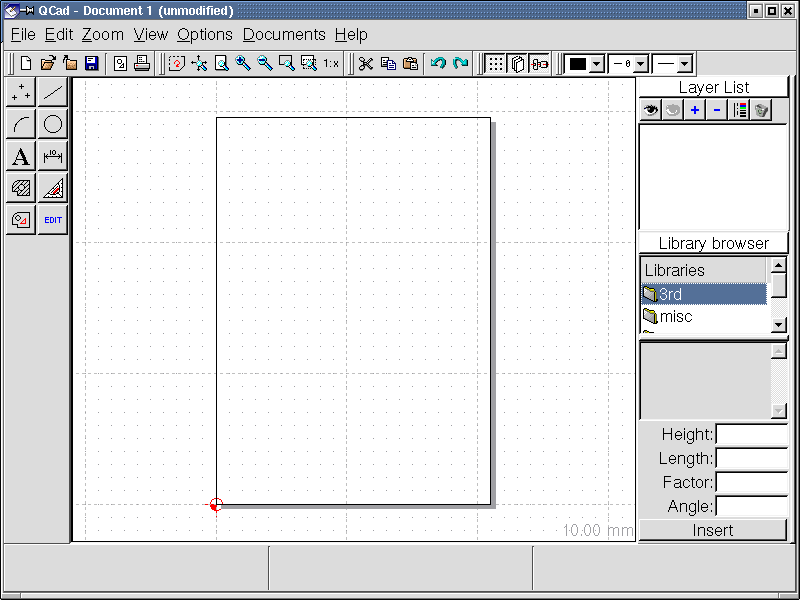
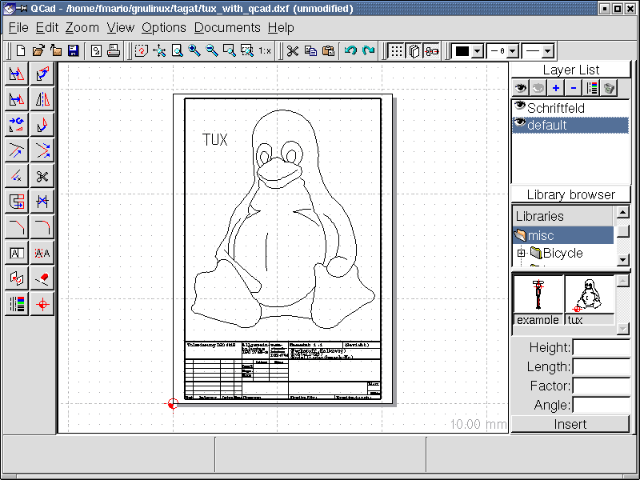
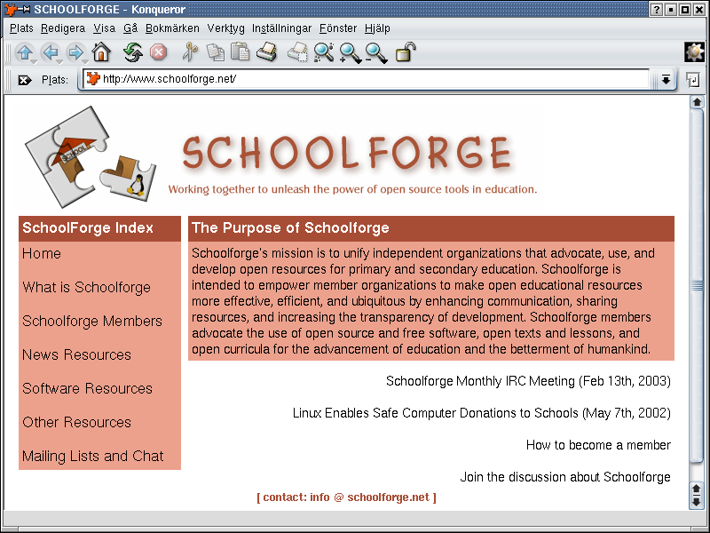

Mer eller mindre regelbundet kommer TUX&GNU@school [2] att rapportera om fri programvara, en hemsida om teman och enkla ideer att pröva. Den här gången ska jag prata om QCad [3], ett fritt 2D-CAD program, om hemsidan Schoolforge.net [4], och om iden "Barn skapar musik".
Välkommen till den 6:e utgåvan. Trots att det är omkring ett år sedan jag publicerade den första utgåva [5] av TUX&GNU@school, är det här den första nummer 6. Tyvärr fungerade inte "varje månad" och det är anledningen till att jag ändrat i introduktionen till "mer eller mindre regelbundet". Men avsikten att rapportera månadsvis finns kvar och förhoppningsvis kan jag hålla tiden fortsättningsvis, då skriver jag också om introduktionen. Nu vill jag peka på en ny översättning till franska av denna kolumn Franska [6] . Tack till Anne-Marie Mahfouf, det är tack vare hennes arbete vi har fått ytterligare en övesättning. Dessutom finns det från och med nu möjlighet att prenumerera på vårt nya nyhetsbrev. Du hittar information och sidan för prenumeration på hemsida [7]. Detta var några nyheter om oss själva men nu vidare till innehållet i detta nummer.
Jag har testat version 1.4.7 från 24:e mars 2001 under Debian GNU/Linux [8] medans den
aktuella versionen nu är 1.5.4.
Upphovsmannen Andrew Mustun valde GNU GPL som licensmetod för
sitt program.
Med Debian och Debian baserade distributioner kan du installera
programmet med "apt-get install qcad".
Med rpm baserade distributioner får du antingen använda
den pakethanterare i distributionen eller från kommandorad:
"rpm -i <qcad-packagename.rpm".
Innan jag går in på intryck och testresultat
måste jag klargöra att mina kunskaper inom CAD/CAM inte
är tillräckliga för att ge en rättvisande bild
av QCad. Det blir därför en kort och lite
amatörmässig översikt denna gång. Vill du veta
mer, gå till hemsida [3]
och den omfattande
flerspråkiga dokumentationen [9].
Programmet har också översatts till ett dussintal olika
språk. Språkinställning och inställning av
måttenheter är väl där du börjara
anpassningen av QCad.

Programmet är delat i flera delar (se skärmbild 1),
menyn och symbolraden överst, funktionsraden till vänster
och listan med olika lager samt biblioteksbrowsern till höger.
Om du klickar på en funktionssymbol dyker en lista av
underfunktioner upp ,om du däremot klickar på
högerknappen eller trycker <ESC> tangenten kommer du
tillbaka till föregående funktionsgrupp respektive
basfunktioner.
Några av basfunktionerna: Punkter, Linjer,
Cirkelbågar, Cirklar, Skapa texter, Dimensioner, Skapa
hatchings, Mått, Ettikett och Editera. En positiv
upptäckt är att när du valt en specifik funktion
kommer text upp i mitten av undre statusraden som föklarar
effekter av höger och vänster musknappar. Till höger
om denna text visas en förklaring av den valda funktionen.
På vänster sida av statusraden visas, för
funktionen, relativa och absoluta koordinater för muspekarens
läge.
När du lärt dej lite om programmet och dess möjligheter kan du börja skapa dina egna delineations. Du kan välja fördefinierade "delineations" ( finns ett svenskt ord ?) och mönster från det symbol och "delineation" bibliotek som ingår. Det innehåller en del kullager, skruvar och ritningar av cykeldelar. Nå, vad skulle QCad vara om det inte fanns en pingvin, det är ju ett GNU/Linux program. (se skärmdump 2). Vidare innehåller programmet några färdiga formelfält. Symbolraden under den aktuella menyn innehåller huvudsakligen knappar för filfunktioner (Open, Save, etc.), olika zoom möjligheter, de obligatoriska Undo och Redo knapparna samt några få funktioner för presentationen av linjer på arbetsytan.

När nu den blivande mekanikingeniören slutfört sin första layout kan denna sparas i formaten: Drawing Exchange (*.cxf), EPS (*.eps) eller Font (*.cxf). QCad kan, utöver nämnda filformat (undantag EPS), öppna och editera Microstation:s (*.dgn) och HPGL (*.plt *.hpgl *.inc) format. Man kan få intrycket att detta program "bara" är nyttigt för tekniska jobb och skolor men det behövs bara en modig lärare som brottas lite mmed QCad och sedan använder programmet på sina geometrilektioner.
Sammanfattningsvis om 2D-CAD programmet QCad: Först, QCad har porterats till ett antal plattformar inte bara ix86 (PC) datorer. sedan, många tack till Mustun och hans otaliga hjälptexter [10] för det här utmärkta programmet.
Vidare nu till hemsidan för den här utgåvan.
Den här gången vill jag presentera organisationen samt webbsidan schoolforge.net [4]. Då den för närvarande endast finns tillgänglig på engelska baseras introduktionen på nuvarande struktur. Den är indelad i följande 7 sektioner: Hem, Vad är Schoolforge, Schoolforge medlemmar, Nyhetsresurser, Programvaruresurser, Andra resurser samt Emaillistor och chat. Men innan den egentliga presentationen låt mej påpeka att deltagande i projektet Schoolforge kräver att du och övriga kontaktpersoner kan läsa och skriva på engelska, i alla fall på en grundläggande nivå.
På första sidan [4](se Skärmbild 3) finns inte så mycket mer än vad som behövs för att ge en översikt. I övre ramen samt på alla följande sidor finns Schoolforge:s logo. . Längre ned till vänster finns den obligatoriska navigationsmenyn med de ovan beskrivna 7 sektionerna. Till höger finns det presenterade innehållet från respektive webbsida. På första sidan finns en kort presentation av Schoolforge följd av aktuella nyheter. Har en webbsida flera olika menyval finns dessa under den vanlga navigationsmenyn. Schoolforge har funnits sedan 8 januari 2002 och har alltså funnits i ett år och sex månader nu.

Om det är ditt första besök hos schoolforge.net bör du vara intresserad av "Vad är Schoolforge" "What is Schoolforge" [11]. Här förklaras att Schoolforge inte är en ny organisation utan mer en virituell paraplyorganisation eller kommunikationskanal för olika grupper med ett gemensamt intresse att marknadsföra öppna alternativ i skolan. Därför handlar det inte enbart om fri programvara. När det gäller medlemsskap är detta inte öppet för enskilda medlemmar, endast organisationer kan vara medlem. Men naturligtvis utser dessa en kontaktperson som representerar en röst från denna organisation. En vanliga uppgift är att förebygga dubbelarbete och förbättra kommunikationen mellan olika projekt. Två referenser i detta ämne är "Schoolforge Operating Procedures" [12] som å ena sidan specificerar vad medlemmar förväntas göra och leverera och å andra sidan "Att bli medlem" [13]. Här finns en beskrivning över var och vad som måste göras för att ansöka om medlemsskap.
Här vill jag gå in på lite mer detaljer angående "Schoolforge Operating Procedures". Medlemsskapet i Schoolforge innebär primärt förbättrad kommunikation där email listor är den centrala startpunkten. Schoolforge används för en gemensam presentation mot omvärlden. Alla medlemmar skall placera länkar och referenser till sina hemsidor här. Förutom detta har varje medlem på sitt ansvar att sammarbeta med andra inom gruppen för att presentera något löpande på emaillistan. Varje månad utses en "vote counter" (rösträknare ?) som är ansvarig för tolkning och blir någon typ av moderator på listan. Dessutom har en medlem ansvar för att underhålla webbsidan Schoolforge.net. En sista punkt jag vill ta upp här är att nya ideer och projekt bör presenteras och diskuteras både för att undvika dubbelarbete men även för att dra nytta av tidigare gjorda erfarenheter och tillgänglig kunskap.
Tredje punkten på navigationsmenyn kommer att ta dej till en sida där medlemmar i alfabetisk ordning [14] finns listade. Överst finns även en länk som tar dej till en något mer detaljerad lista detailed list of members [15]. För närvarande finns mer än 140 organisationer representerade.På sidan "News Resources" [16]are finns länkar till webbsidor som regelbundet presenterar nyheter. Några av dem: Opensourceschools.org [17] as a little journal, seul.org/edu [18] som publiserar en report [19] varannan vecka samt schoolforge:s egna email lista [20]. "Software Resources" [21] innehåller mestadels länkar till relaterade projekt där jag vill peka på några speciella: the application index [22] för SEUL/edu [17], the Debian [7] och underprojektet "Debian Jr." [23] and the KDE Edutainment project [24] vars kontaktperson med Schoolforge också bidrar med översättningen French translation of "TUX&GNU@school" [6] Överst till vänster på sidan "Software Resources" finns en ämneskatalog över de senaste tilläggen i applikationsdatabasen på SEUL/edu.
Ytterligare ämnesinriktade intressanta och nyttiga webbplatser finns under "Other Resources" [25]. Här ingår en databas med lyckade projekt respektive enskilda studier av Linux i skolan [26], en ämnesorienterad länk samling [27] och en öppen databas Needs, Problems and Opportunities (NPO) över användning av teknologi inom utbildning [28]. Slutligen som sista punkt finns här information to the mailing lists [20] där det även finns en länk till online arkiven. Dessutom finns här beskrivet, när, var och hurdet är möjligt att träffas på IRC.
Detta var en kort presentation av Schoolforge och IMHO (in my humble opinion) en nyttig genomgång av lite runt "GNU/Linux at school" men nu vidare till nästa ämne i denna utgåva.
Fram tills nu har jag introducerat små ideer som lätt kunnats genomföras av en programmerare på nolltid. Men just nu är jag inte så säker på att detta är av intresse då ingen återkoppling och inga implemetationer kommit för de senaste ideerna. Kanske var de för banala, för svåra, inte intressanta eller vad tycker du ? Skicka gärna synpunkter och ideer om detta till [1]. Än viktigare och intressant för mej vore ideer och önskningar från verksamheten, d.v.s. från lärare och instruktörer som själva undervisar och vet vad som saknas i verksamheten.
Nå här kommer en ide jag fick när jag lekte lite med Tuxpaint [29] [30]. Många kanske redan har provat Tuxpaint ock vet att många stämplar har någon form av ljud knutet till sej. När du klickar mer än en gång på en symbol sedan växlar mellan olka stämplaruppkommer en del intressanta ljudkombinationer. Baserat på den här iden borde det inte vara alltför svårt att skriva ett program med ett antal knappar som hade ett ljud knutet till sej. En inspelningsfunktion skulle runda av det hela och ge morgondagens Mozart eller Beethoven ytterligare ett användbart verktyg.Jag skulle vara glad om denna ide gav upphov till lite brus här. Nu vidare till nyheterna i denna utgåva.
För några veckor sen vart 1.3 FREEDUC [31] publiserad. FREEDUC är en distribution baserad på den välkända Knoppix [32] vars huvudsyfte är att demonstrera fri utbildningsprogramvara. Exakt vilka programvaror som finns med kan du se här [33] (Notera: *.txt.gz fil).
Det har gått en tid sedan den första publikationen [34] men jag tänkte nämna detta en gång till. I Österrikiska skolor är det nu to möjligt för elever att genomföra en GNU/Linux certifiering.
För några veckor sedan publiserade tyska BSI - Bundesamt für Sicherheit in der Informationstechologie [35] (Myndigheten för säkerhet inom informationsteknologi) en ny informations plats [36] (endast på tyska) för allmänheten. Informationen som finns här har inget med fri programvara och GNU/Linux att göra men är intressant och lättförståligt (om du kan tyska). De föklarar dels vanliga termer som "internet" och dess funktionalitet men även ur ett säkerhetsperspektiv. Här vill jag propagera, IMHO, en genial förklaring av internet från "Sachgeschichten" (historier om hur saker fungerar) från den tyska "Sendung mit der Maus" [37] (TVprogram för barn i Tyskland). Det går att ladda ner den korta och informativa filmen här [38].
Bruno Coudoin släppte för några veckor sedan version 3.0 följd av GCompris 3.1 för några dagar sedan. Viktigaste ändringar är hantering av felmeddelanden i fönstersystemet (gnome-canvas biblioteken) vilket inte kunde åtgärdas innan nya meddelandefält kunde skrivas i python. Dessutom finns några nya fält med varje ny version. boards as with each new version of course. Exakta detaljer finns på hemsidan GCompris [39]. Passar också på att gratulera Bruno till hans succe [40] på TropheeduLibre.org [41].
KTouch ifinns i ny version (1.3) sedan några veckor. Se ändringar och nya funktioner på hemsida [42].
SkoleLinux [43] är en Debian baserad distribution från Norge som är speciellt framtagen för utbildningsändamål. Det finns även en Tysk hemsida [44] och ett tyskt team som arbetar på att anpassa denn till tyska. Tyvärr finns det ingen stabil release just nu av denna lovande distribution. Preversion "pre38" släpptes för test för några veckor sedan. SkoleLinux är också den första distribution jag vet som i produktion använder den nya Debian-Installer [45].
och innan jag glömmer : Det här är den förstat versionen av TUX&GNU@school som även finns tillgänglig som OGG Vorbis, Wave och MP3 [7] ;-) Lyssna här. Hej och på återseende ...
[1] Criticism, questions,
comments, ideas and more please to: foxman@lugo.ch
[2] The
homepage of TUX&GNU@school:
www.unormal.org/alis/tagatschool6.en.html
[3] The homepage of QCad:
www.QCad.org
[4] The homepage of
Schoolforge.net: www.Schoolforge.net
[5] First edition of
TUX&GNU@school
[6] TUX&GNU@school
in French
[7] Subscribe
possibility for the TUX&GNU@school newsletter
[8] The homepage of Debian:
www.debian.org
[9]
Multilingual documentation of QCad
[10] Developer
list of QCad
[11] Schoolforge.net
-> "What is Schoolforge"
[12] Schoolforge.net ->
"Schoolforge Operating Procedures"
[13] Schoolforge.net ->
"Becoming a member"
[14] Schoolforge.net ->
"Schoolforge members" (alphabetical order)
[15] More
detailed list of the Schoolforge members
[16] Schoolforge.net
-> "News Resources"
[17] OpenSourceSchools.org
- News for OpenSource at school and in education
[18] The homepage of SEUL/edu:
www.seul.org/edu
[19] Reports from
SEUL/edu
[20] Schoolforge.net ->
"Mailing lists and chat"
[21] Schoolforge.net ->
"Software Resources"
[22] The application index of
SEUL/edu
[23] The homepage
of the Debian subproject "Debian Jr."
[24] The homepage of the KDE
Edutainment project: edu.kde.org
[25] Schoolforge.net -> "Other
Resources"
[26] A database of
SEUL/edu with success stories resp. case studies about Linux at
school
[27] A link collection of
SEUL/edu
[28] An open database of
Needs, Problems and Opportunities (NPO) in usage of technology in
education
[29] The
homepage of Tuxpaint: www.newbreedsoftware.org/tuxpaint
[30] The fifth
edition of TUX&GNU@school
[31] The homepage
of FREEDUC
[32] The homepage of Knoppix:
www.Knoppix.de
[33] The package
list of FREEDUC
[34] "Linux certificates
for Austrian pubpils" on Pressetext.at
[35] The homepage of the German
"Bundesamtes für Sicherheit in der Informationstechnik - BSI"
(Federal Office for information technology security):
www.bsi.de
[36] New information
website of the BSI: www.BSI-fuer-Buerger.de
[37] The homepage of
the German telecast "Sendung mit der Maus":
www.Sendung-mit-der-Maus.de
[38] Download link to
the Sachgeschichten-Video "Internet"
[39] The homepage of
GCompris: www.ofset.org/GCompris
[40] GCompris on
tropheesdulibre.org
[41] TropheeduLibre.org
(French)
[42] The homepage of KTouch:
Ktouch.sourceforge.net
[43] The homepage of
SkoleLinux: www.SkoleLinux.no
[44] The German homepage of
SkoleLinux: www.SkoleLinux.de
[45] One
homepage of the new Debian-Installer
Mario Fux finished 1999 the PrimarlehrerInnenseminar in Brig after he made up mathematical and natural scientifical matura. In a body with two colleagues he founded the "ALIS - Arbeitsgruppe Linux an Schulen" (Swiss work group for linux at school). And if he once doesn't spend his time in front of the PC, he sits at his nature pond in the mountains.
This document is distributed under the terms of the GNU Free Documentation License.
Copyright (c) 2002 Mario Fux. Permission is
granted to copy, distribute and/or modify this document under the
terms of the GNU Free Documentation License, Version 1.2 or any
later version published by the Free Software Foundation; with no
Invariant Sections, no Front-Cover Texts, and no Back-Cover
Texts.
A copy of the license can be found at http://www.gnu.org/licenses/fdl.html.